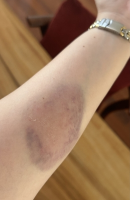

・・・コケましてん(汗)
先週土曜日は阿久比の画材屋さん「ART & YOU」で
今年2回目のワークショップでした。
・・・そーなのよ。台風が太平洋沖で迷走して停滞していたあの日です(汗)。
風はそこまで強くなかったんですが、
雨が時々バケツをひっくり返したレベルで降ったりしていました。
ワークショップ自体は滞りなく終了しまして、
来てくださった受講者の方も満足してくださいました。
ワタクシ的には半年に1回と、ホント忘れた頃にやってくる( ? )ワークショップは
それなりに緊張するもんなんですよね〜(笑)、何事もなく終われたって
ちょっと安堵があったのは確かなんだけど(笑)。
ミニギャラリーでの作品展示・販売で預かっていただいてていた作品を
片付けて、我が家では不要になったパネルを寄付したくて持って来ていたので
雨が小降りのうちに車に取りに行き、ちょっとだけ無理して多めのパネルを抱えて
お店の扉を開けた時、扉下の段差につまづいた ? なんか滑った気がするんだけど(汗)
もしかしたら雨が降ってたので濡れていたのかもしれません・・・
7枚ほどのB2パネルを抱えたままお店の入り口でコケましてん(汗)・・・。
コケた時、多分ワタクシ無言だったと思うんだけど、ただ(やっちまったー ! )と(笑)。
パネル抱えてたので多分デカい音がしたと思います(汗)。
オーナーさんがすっ飛んできてくださいました(恥)。
てか、所狭しと画材が並んだ画材屋さんの入り口ですっ転んだので
「もしや、なんか壊したのでは !?」とめっちゃ焦りました。
幸い上手に( ? )通路に倒れ込んだようで、破壊したものはなかったみたいです・・・。
そんで、コレ・・・(汗)
↓

・・・立派な青タンできましてん〜(悲)。
反対の肘あたりと手首の骨の出たところも打ち身になってて腫れてました(汗)。
やべー・・・下手したら骨折だぜ。
パネル抱えてたからそのまんま行ったっぽいんだけど(汗)、
あたしって骨が丈夫なんだなぁ、今まで、けっこう悲惨なコケ方して来たけど、
骨折ったことって、1回もないもーん(爆)。
2日たって今日、ブヨブヨに腫れてた肘もすっかり良くなりました。
痛みもほとんどありません。
「あたしってすげー。」って、ちょっと調子に乗っちゃいそうになってるけど
ここは一旦落ち着いて・・・たまたま無事だったって思うようにしようと思います。
大抵の人間は「私は大丈夫〜。」って思ってんのよ。
いつもハルには「調子にのんな !!」って言ってるけど、
なにを隠そう、ワタクシだって実は同じなんだよね・・・てへっ。
もー、ママはおばちゃんだってわしゅれてましぇんか ?
おばちゃんはおもったいじょーにからだがうごかないんでしゅよ ?
きをちゅけるでしゅよ !!